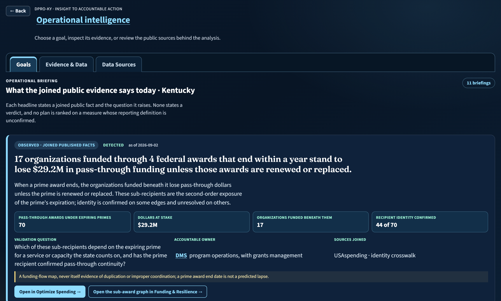
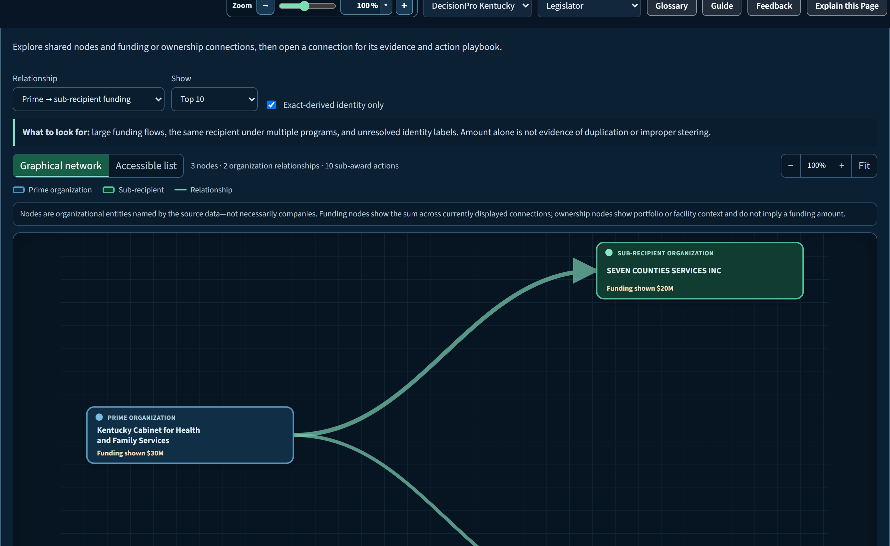
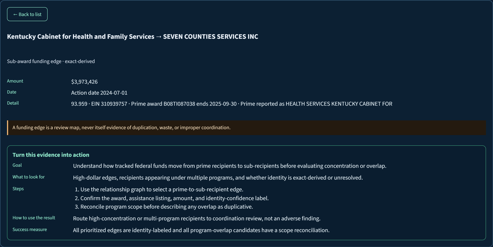
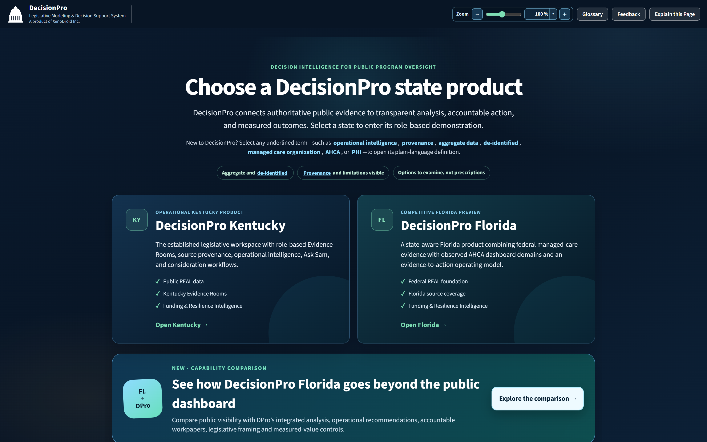
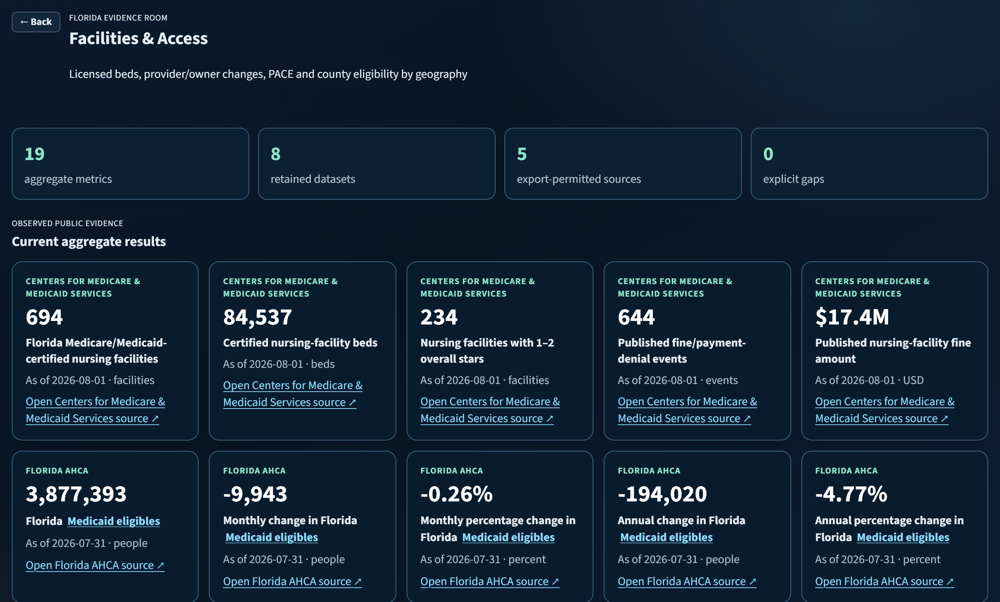
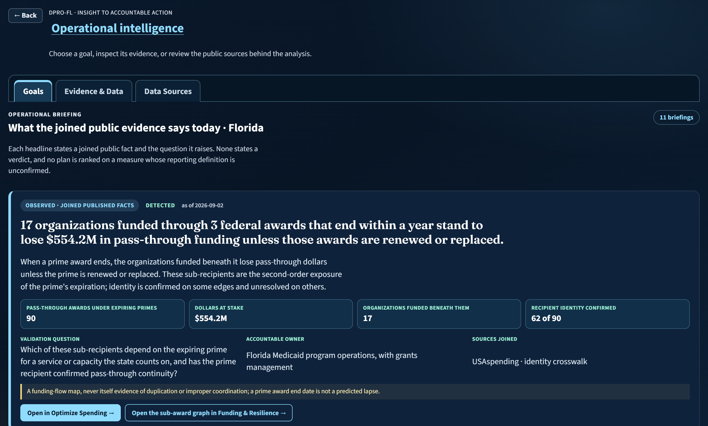

One platform · Two states · Accountable outcomes
Public evidence,
turned into accountable action.
DecisionPro connects each state’s authoritative public data to governed analysis, plain-language morning headlines, quantified opportunities, and accountable workpapers — without ever losing the source, the caveat, or the human in charge.
Aggregate & de-identified
Publisher boundaries honored
Options — not prescriptions
01 — The platform idea
State-specific evidence.
A consistent path to decisions.
DecisionPro is one shared product platform — not a collection of dashboard clones. Each state keeps its own sources, definitions, reporting periods, laws, and agencies, while the path from evidence to decision stays the same.
Connect
Permitted public sources join a governed catalogue. Restricted or unreconciled publisher views stay reachable — and stay explicitly labeled.
Understand
Role-aware homes and Evidence Rooms compare aggregate patterns with provenance, freshness, definitions, and limitations attached to every figure.
Operationalize
Signals become quantified opportunities, decision cases, accountable owners, workpapers, due dates, and review priorities.
Measure
Modeled benefit and realized value are tracked separately, with the evidence preserved to explain what changed — and why.
02 — Operational Intelligence
Every morning, the evidence
says something.
Above each state’s operational goals sits the Operational briefing — a ranked strip of Headlines: cross-source inferences that join facts no single publisher shows together. Each headline states the joined public fact and the open question it raises. Never a verdict.
demo.decisionpro.io/?state=KY · Operational

How a headline earns its place
- Fact + question. A headline states a joined public fact and the validation question it raises — written in the language of programs, dollars, facilities, and people, never data-model jargon.
- Ranked by decision value. Goals touched first, observed before inferred, nearest deadline next — never novelty.
- Verdicts are structurally banned. “Waste”, “fraud”, “breach”, “distress”, “savings”, “abuse” and similar terms are prohibited in headlines and enforced by automated test.
- Gaps stay visible. When a source slice isn’t loaded, the card says so — with its unblock path — instead of silently disappearing.
Observed
Every figure is a published fact joined on an exact key.
InferredA declared threshold or heuristic selects the rows.
GapThe join can’t run yet; the card names what unblocks it.
Today’s briefing, verbatim
17 organizations funded through 4 federal awards that end within a year stand to lose $29.2M in pass-through funding unless those awards are renewed or replaced.
When a prime award ends, the organizations funded beneath it lose pass-through dollars unless the prime is renewed or replaced — the second-order exposure of the prime’s expiration.
The routine Title XIX grant is 99% of Kentucky’s federal award dollars expiring within a year; the 14 awards worth $249.7M to service providers are where an expiration would reach people.
The Title XIX grant recurs every federal fiscal year and is not the exposure. The recipient awards — mostly health-center and block-grant funding — are where an unresolved expiration would reach members.
17 chains run 66% of Kentucky’s nursing facilities; the largest, SIGNATURE HEALTHCARE, has 16 of its 38 rated facilities at 1–2 stars.
Quality and financial patterns concentrate under common ownership: a chain with many low-rated facilities is a review unit in itself, not a set of unrelated facilities.
United Healthcare Community Plan reports 63% of the overpayments Kentucky’s MCO contract plans identified while serving 6% of members. Is it counting the same way as the other 5?
One reporting entity carries most reported overpayment dollars on a small share of members — and the program’s lowest encounter-data timeliness. Before that drives a recovery question, the reporting basis has to be confirmed.
Kentucky reported 33 sanctions and compliance actions against its Medicaid plans; 4 were still open at the report, and 13 cite a specific contract section. Which open ones carry a liquidated-damages clause?
Reporting and performance improvement dominate the reasons. The open records — and the contract sections the state itself cited — are where follow-up is due.
42 Kentucky nursing facilities with 4,390 beds are losing money, rated 1–2 stars by CMS, and depend on Medicaid for most of their patient days.
Losing money, low-rated, and Medicaid-dependent at once carries a continuity risk and a quality concern together. Beds and published fines size the exposure.
7 Kentucky nonprofits that serve Medicaid members or receive federal Medicaid-related funds hold less than three months of reserves; 7 have for two filings running.
Thin reserves mean an award delay would reach operations within a quarter. The two-filing repeat separates persistent thinness from a single year’s accounting.
Kentucky’s 6 MCO contract plans report appeal rates that differ 121.3×; the spread reflects counting rules, not performance, until each plan’s definition is confirmed.
Spreads that wide reflect how each plan counts, so a plan ranking on these measures would misstate performance — and any oversight built on it would land on the wrong plan.
8 Kentucky organizations draw $139.8M under more than one federal program; whether that funds two services or one service twice is unverified.
Organizations funded under both block-grant and Medicaid streams may serve distinct populations or fund the same objective twice. The named list is where a scope reconciliation starts.
10 Kentucky health-center awards expire within a year; 5 federal successor opportunities are open for the same program, and renewal is unconfirmed for 10 of the 10.
Federal successor funding is already posted for the listing these awards sit under. Whether each recipient applied is the open question.
In 20 Kentucky counties every hospital or nursing facility that files a cost report is losing money; 15 of those counties have just one facility, together serving 60,778 Medicaid members.
Where a county’s only facility operates at a loss on a high-Medicaid payer mix, an exit would leave that county’s members without local capacity.
17 organizations funded through 3 federal awards that end within a year stand to lose $554.2M in pass-through funding unless those awards are renewed or replaced.
When a prime award ends, the organizations funded beneath it lose pass-through dollars unless the prime is renewed or replaced — the second-order exposure of the prime’s expiration.
The routine Title XIX grant is 96% of Florida’s federal award dollars expiring within a year; the 36 awards worth $1.3B to service providers are where an expiration would reach people.
The Title XIX grant recurs every federal fiscal year and is not the exposure. The recipient awards are where an unresolved expiration would reach members.
47 chains run 75% of Florida’s nursing facilities; the largest, AVIATA HEALTH GROUP, has 30 of its 50 rated facilities at 1–2 stars.
Quality and financial patterns concentrate under common ownership: a chain with many low-rated facilities is a review unit in itself, not a set of unrelated facilities.
Florida reported 2 sanctions and compliance actions against its Medicaid plans; 2 were still open at the report. Which open ones carry a liquidated-damages clause?
The open records — and the sections the state itself cited — are where contract follow-up is due.
118 Florida nursing facilities with 15,676 beds are losing money, rated 1–2 stars by CMS, and depend on Medicaid for most of their patient days.
Losing money, low-rated, and Medicaid-dependent at once carries a continuity risk and a quality concern together. Beds and published fines size the exposure.
36 Florida nonprofits that serve Medicaid members or receive federal Medicaid-related funds hold less than three months of reserves; 33 have for two filings running.
Thin reserves mean an award delay would reach operations within a quarter. The two-filing repeat separates persistent thinness from a single year’s accounting.
Florida’s 10 MMA plans report appeal rates that differ 108.5×; the spread reflects counting rules, not performance, until each plan’s definition is confirmed.
Spreads that wide reflect how each plan counts, so a plan ranking on these measures would misstate performance.
11 Florida organizations draw $2.2B under more than one federal program; whether that funds two services or one service twice is unverified.
The named list, with listings and dollars, is where a scope reconciliation starts; receiving funds under two programs is not itself duplication.
Florida’s federal managed-care report lists 2 plan sanctions ($2,200) while AHCA’s own compliance reporting shows $500 assessed across 2 action categories; the two cover different enforcement universes.
An oversight review that cites one without the other will understate or overstate enforcement activity.
32 Florida health-center awards expire within a year; 5 federal successor opportunities are open for the same program, and renewal is unconfirmed for 32 of the 32.
Federal successor funding is already posted for the listing these awards sit under. Whether each recipient applied is the open question.
In 8 Florida counties every hospital or nursing facility that files a cost report is losing money; 4 of those counties have just one facility, together serving 140,629 Medicaid eligibles.
Where a county’s only facility operates at a loss on a high-Medicaid payer mix, an exit would leave that county’s members without local capacity.
The briefing sits above six goal portfolios per state:
Optimize SpendingImprove Coverage & AccessIdentify Quality GapsContract AccountabilityProtect Program IntegrityTrend & Budget Planning
Florida runs its own six — from Strengthen Plan Accountability to Improve Hospital Reporting — with state-specific definitions intact.
03 — Funding & Resilience Intelligence
Who funds the safety net —
and how resilient is it?
Medicaid capacity is delivered by organizations: nursing-home chains, nonprofit health centers, hospitals, grantees. The Funding & Resilience Evidence Room joins nine federal sources into one governed picture of those organizations — who they are, who funds them, who owns them, and where a funding cliff or thin balance sheet deserves a closer look before it becomes an access problem.
demo.decisionpro.io · Funding & Resilience Evidence Room

Questions it answers in plain terms
- Which organizations deliver Medicaid-adjacent capacity — and who funds them?
- Which federal awards expire within a year, and who loses pass-through funding if they aren’t renewed?
- Which nonprofits are running on less than three months of reserves — two filings running?
- Which facilities lose money on a high-Medicaid payer mix, and which counties depend on them?
- Who owns what — which chains run how many facilities, and what changed recently?
- Where does money flow from prime awards down to sub-recipients?
Ownership & control playbook · Kentucky

Governed to be trusted
- Review candidate, not a finding. No funding amount, ratio, ownership link, or network position is ever labeled waste, fraud, distress, or savings.
- Exact and inferred never mix. Confirmed identity links and probable matches live in separate structures — an inference is never presented as a confirmed identity.
- Gaps, not blanks. A blocked or key-gated source becomes a labeled Gap object with an unblock path — never a fixture standing in for real data.
- Organizations only. No PHI, no person-level records — owner names that aren’t organizations are withheld, and the chain is identified by its CMS id instead.
2,863organization signals · 1,530 KY / 1,333 FL
10signal types per state room
9federal lineage sources
04 — Live state products
One DecisionPro. Two distinct
public-program environments.
KY
DecisionPro Kentucky
Legislative Modeling & Decision Support System
Role-based Kentucky Medicaid intelligence spanning enrollment, spending, access, quality, contracts, providers, districts, operational recommendations, and recovery review.
- 10 Kentucky Evidence Rooms
- 6 quantified operational goal portfolios
- Recovery reconciliation workpaper
- Consideration Blender & legislative analysis
FL
DecisionPro Florida
Public dashboard evidence, fully operationalized
Connects Florida AHCA’s public dashboard suite and federal managed-care evidence to analysis, opportunities, workpapers, decision reports, owners, and benefit measurement.
- 9 Florida Evidence Rooms
- 11 AHCA dashboard domains connected
- Source-native plus normalized analysis
- Action and realized-value tracker
05 — Beyond dashboard parity
Everything public stays reachable.
DecisionPro adds the decision layer.
DecisionPro complements authoritative state publishers. It does not claim ownership of their dashboards or bypass restrictions.
CapabilityPublic dashboard experienceDecisionPro multi-state platform
DiscoveryPublisher- and program-specific destinationsUnified state catalogue and Evidence Rooms with source-native links
AnalysisNative filters, charts, comparisons, and downloadsPreserves native interaction and adds normalized cross-source comparisons
GovernanceDefinitions and context remain with each publisherProvenance, freshness, content hashes, limitations, gaps, and reconciliation status
ActionSupports monitoring and investigationQuantified opportunities, transformations, owners, due dates, status, and workpapers
ReportingDashboard- and export-specific outputsIntegrated reports, executive briefs, option packs, and legislative framing
BenefitNo cross-dashboard realization workflow is assumedModeled benefit and realized value tracked separately
06 — Inside the product
Full-spectrum reporting is a workflow,
not a slogan.



07 — Credibility by design
Strong decisions need
visible boundaries.
DecisionPro keeps observed facts, analytical transformations, modeled opportunities, recommendations, and realized outcomes distinct. It is designed for aggregate or de-identified public-program oversight — never PHI or person-level Medicaid records.
- Publisher remains the source of record
- Export restrictions are enforced
- Gaps stay visible instead of being fabricated
- Modeled benefit is not called realized savings
- Human authority remains in control
The next state starts with the same discipline